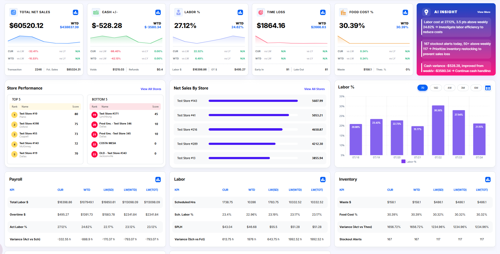

Transform operational data into intelligent business decisions using AI-powered dashboards, predictive analytics, and actionable recommendations.

AI Dashboard consolidates operational data from multiple restaurant modules — Labor, Inventory, Sales, Payroll, Cash Control, and Compliance — into one intelligent platform. Instead of switching between reports, operators get a unified, AI-verified view of store and organization performance with clear, prioritized actions.
A single health index validated by AI across labor, inventory, sales, payroll, and cash.
Franchise-wide performance aggregated across every store in real time.
Labor %, food cost, SPLH, sales, OT, and cash control at store granularity.
Week, month, quarter, and year comparisons for every metric.
Forecast-driven actions that address issues before they impact P&L.
Drill from a KPI change to the department, shift, or employee driving it.
Every dashboard produces daily and weekly narratives, alerts, and recommended actions — written automatically from live operational data.
Multi-unit operators lose margin in the gaps between systems. AI Dashboard closes those gaps — one platform, one score, and a clear list of what to do next.
Labor, inventory, sales, payroll, cash, and compliance in one place.
Live operational sync across every store, all day.
Recommendations ranked by impact, savings, and confidence.
Target labor, OT, and waste where the dollars actually leak.
Break, minor, and fair work week adherence tracked automatically.
AI risk scoring flags stores before problems become losses.
SPLH and schedule efficiency optimized per daypart.
Variance, waste, and stockout alerts keep food cost in line.
AI summaries turn your entire organization into a two-minute read.
Every store measured against org averages and industry targets.